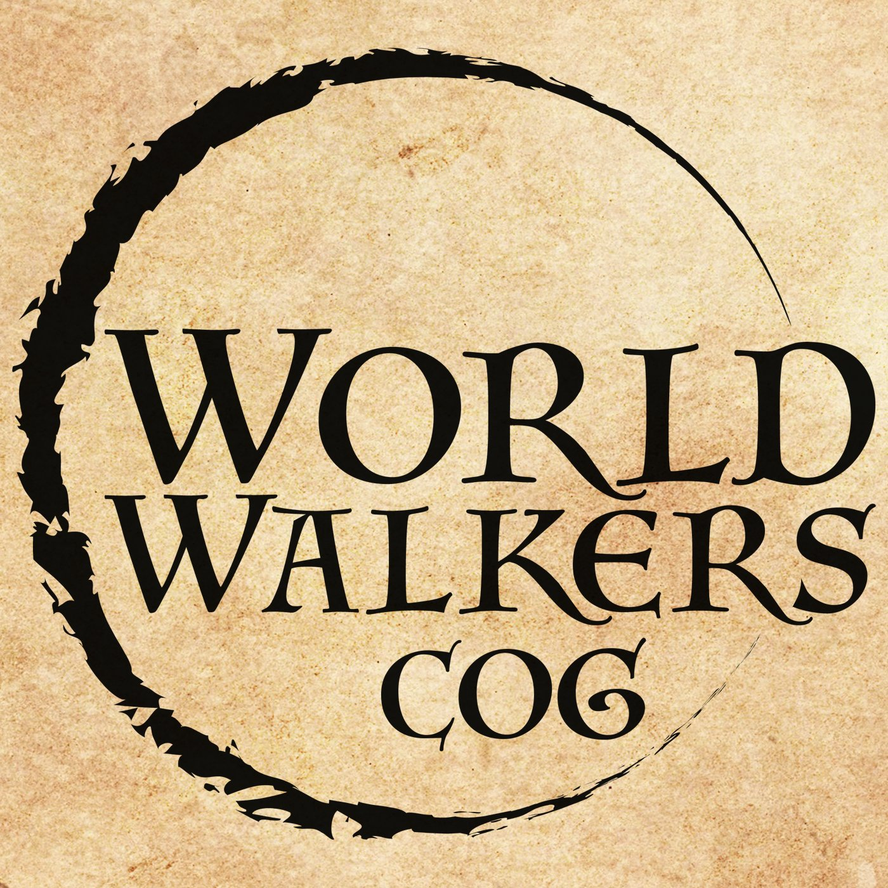

The World Walkers Universe · Spinoff
Set in the Steam-Powered World of Cog — a planet of airships, gunslingers, ex-slave wargolems, and a shattered kingdom of magic.
38 Episodes · October 2018 – July 2020